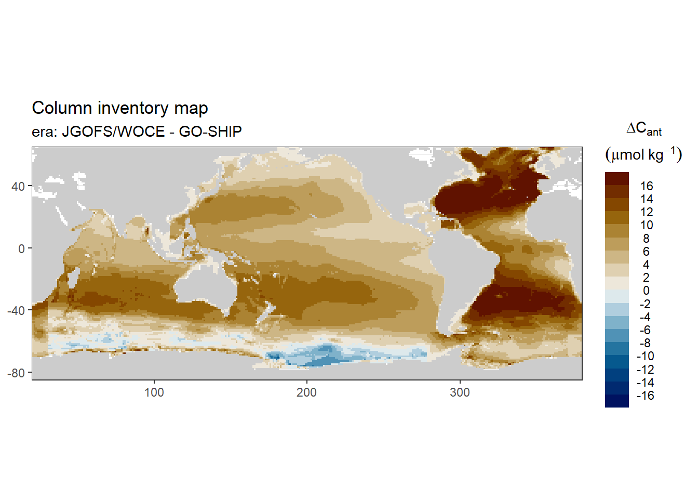
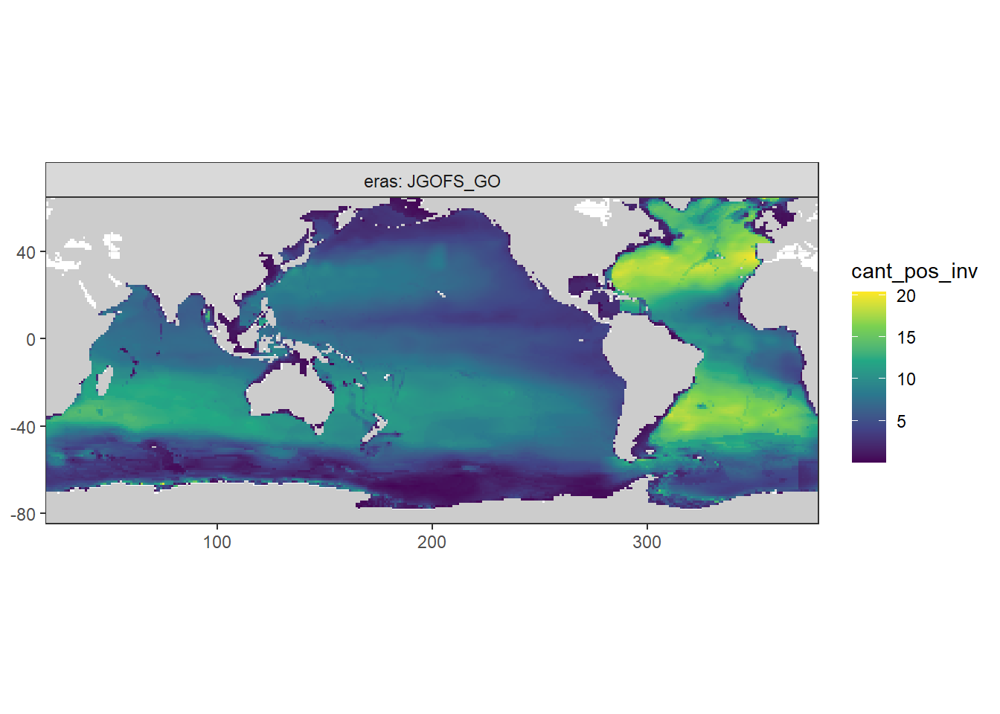
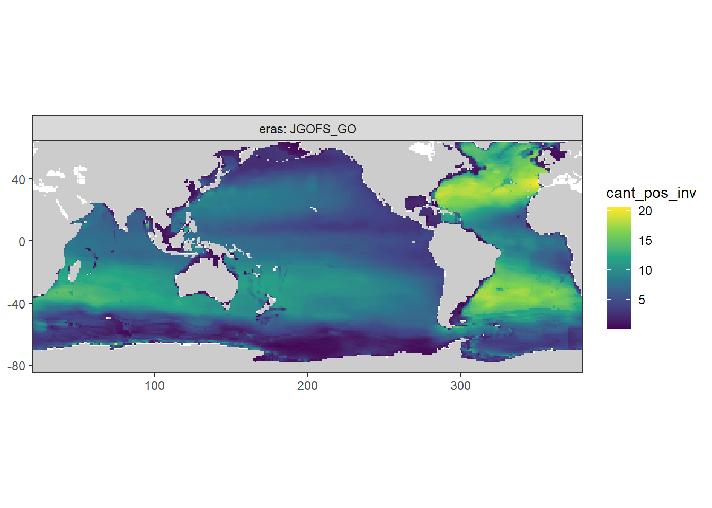
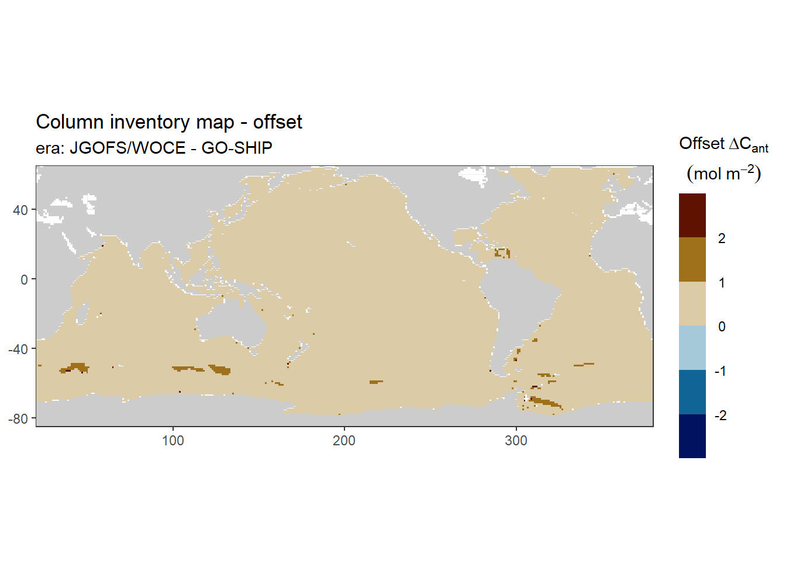
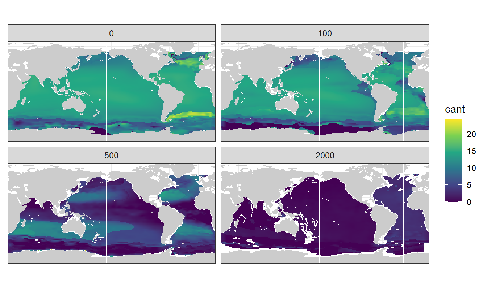
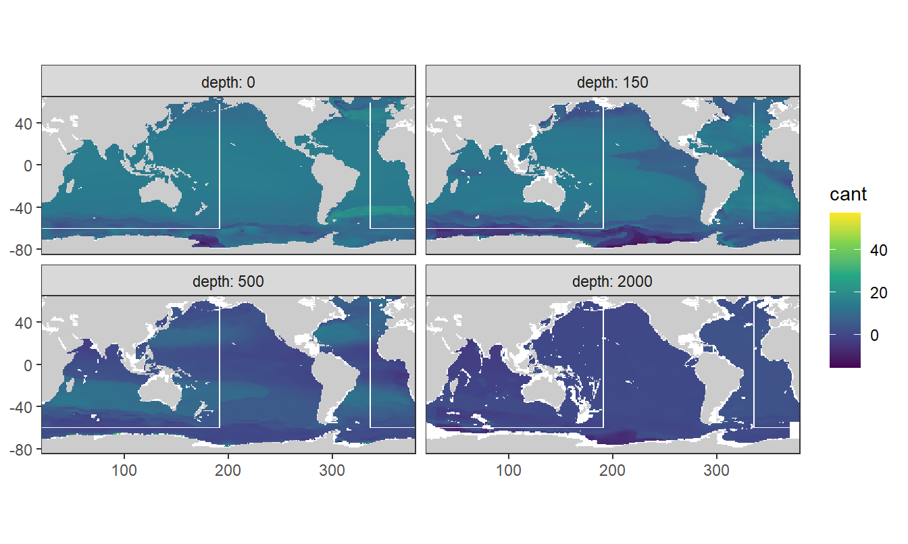
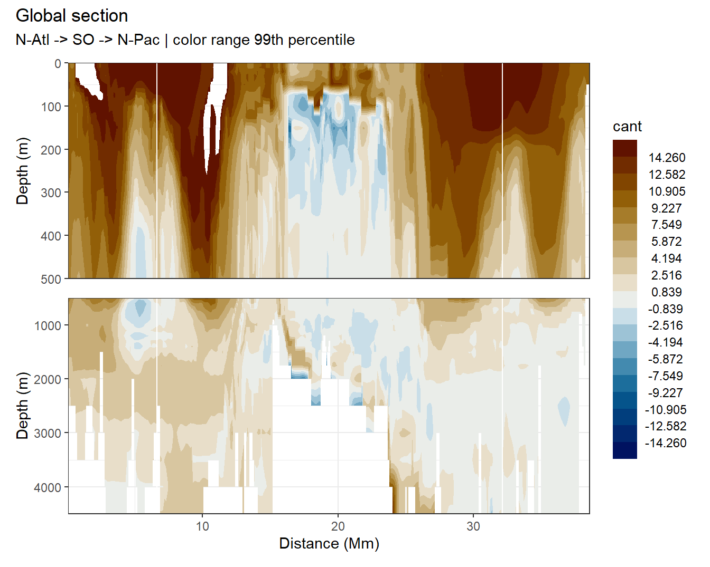
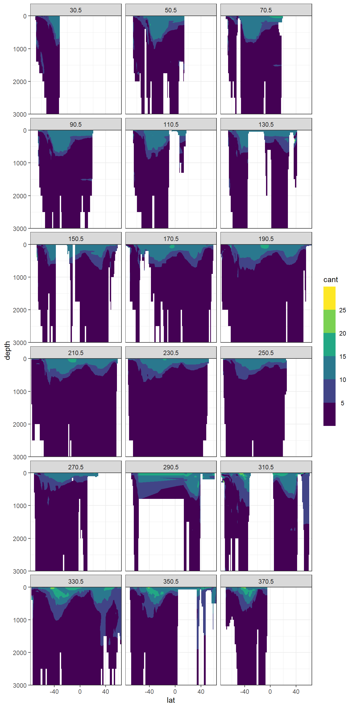
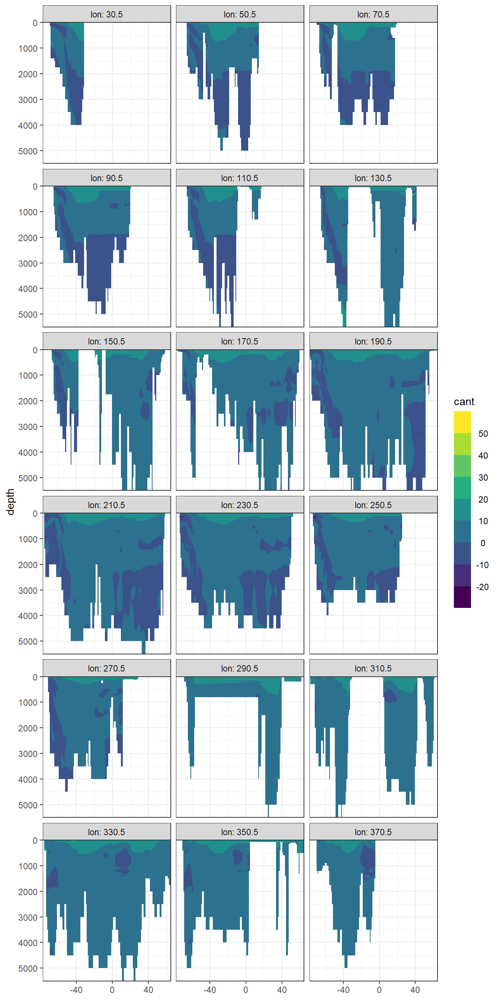

Anthropogenic CO2 from 1994 to 2007
Jens Daniel Müller
20 November, 2020
Last updated: 2020-11-20
Checks: 7 0
Knit directory: Cant_eMLR/
This reproducible R Markdown analysis was created with workflowr (version 1.6.2). The Checks tab describes the reproducibility checks that were applied when the results were created. The Past versions tab lists the development history.
Great! Since the R Markdown file has been committed to the Git repository, you know the exact version of the code that produced these results.
Great job! The global environment was empty. Objects defined in the global environment can affect the analysis in your R Markdown file in unknown ways. For reproduciblity it’s best to always run the code in an empty environment.
The command set.seed(20200707) was run prior to running the code in the R Markdown file. Setting a seed ensures that any results that rely on randomness, e.g. subsampling or permutations, are reproducible.
Great job! Recording the operating system, R version, and package versions is critical for reproducibility.
Nice! There were no cached chunks for this analysis, so you can be confident that you successfully produced the results during this run.
Great job! Using relative paths to the files within your workflowr project makes it easier to run your code on other machines.
Great! You are using Git for version control. Tracking code development and connecting the code version to the results is critical for reproducibility.
The results in this page were generated with repository version 21f6e29. See the Past versions tab to see a history of the changes made to the R Markdown and HTML files.
Note that you need to be careful to ensure that all relevant files for the analysis have been committed to Git prior to generating the results (you can use wflow_publish or wflow_git_commit). workflowr only checks the R Markdown file, but you know if there are other scripts or data files that it depends on. Below is the status of the Git repository when the results were generated:
Ignored files:
Ignored: .Rproj.user/
Ignored: data/
Ignored: dump/
Note that any generated files, e.g. HTML, png, CSS, etc., are not included in this status report because it is ok for generated content to have uncommitted changes.
These are the previous versions of the repository in which changes were made to the R Markdown (analysis/read_Gruber_2019_Cant.Rmd) and HTML (docs/read_Gruber_2019_Cant.html) files. If you’ve configured a remote Git repository (see ?wflow_git_remote), click on the hyperlinks in the table below to view the files as they were in that past version.
| File | Version | Author | Date | Message |
|---|---|---|---|---|
| html | e563eef | jens-daniel-mueller | 2020-11-20 | Build site. |
| html | 14c98aa | jens-daniel-mueller | 2020-11-20 | Build site. |
| Rmd | caca4af | jens-daniel-mueller | 2020-11-20 | rebuild with child setup document |
| html | 2116b56 | jens-daniel-mueller | 2020-11-18 | Build site. |
| Rmd | a38e217 | jens-daniel-mueller | 2020-11-18 | rebuild all read-in functions |
| html | fc70a34 | jens-daniel-mueller | 2020-11-10 | Build site. |
| html | 280c425 | jens-daniel-mueller | 2020-11-09 | Build site. |
| Rmd | 7786901 | jens-daniel-mueller | 2020-11-09 | created comparison plots |
| html | b170b79 | jens-daniel-mueller | 2020-11-03 | Build site. |
| Rmd | bfa7a21 | jens-daniel-mueller | 2020-11-03 | added comparison to Gruber 2019, revised basin mask |
| html | 411a35b | jens-daniel-mueller | 2020-10-02 | Build site. |
| html | 0d38979 | jens-daniel-mueller | 2020-10-01 | Build site. |
| html | 4578cfa | jens-daniel-mueller | 2020-09-19 | Build site. |
| html | d59f716 | jens-daniel-mueller | 2020-09-18 | Build site. |
| html | f5a20ac | jens-daniel-mueller | 2020-09-17 | Build site. |
| html | cf64460 | jens-daniel-mueller | 2020-09-17 | Build site. |
| html | d43d9e2 | jens-daniel-mueller | 2020-09-16 | Build site. |
| html | 1f3319a | jens-daniel-mueller | 2020-09-16 | Build site. |
| html | da91d98 | jens-daniel-mueller | 2020-09-10 | Build site. |
| Rmd | acd5ac0 | jens-daniel-mueller | 2020-09-10 | rebuild with global sections only |
| html | a34a239 | jens-daniel-mueller | 2020-09-10 | Build site. |
| html | c3ffdfd | jens-daniel-mueller | 2020-09-08 | Build site. |
| Rmd | 04ee730 | jens-daniel-mueller | 2020-09-08 | rebuild after revision |
| html | a50f053 | jens-daniel-mueller | 2020-09-07 | Build site. |
| html | da445a6 | jens-daniel-mueller | 2020-09-04 | Build site. |
| html | fa11a74 | jens-daniel-mueller | 2020-09-02 | Build site. |
| html | 429aab3 | jens-daniel-mueller | 2020-09-01 | Build site. |
| html | f4216dd | jens-daniel-mueller | 2020-09-01 | Build site. |
| html | 13a76d5 | jens-daniel-mueller | 2020-08-28 | Build site. |
| html | 27404de | jens-daniel-mueller | 2020-08-27 | Build site. |
| html | d240341 | jens-daniel-mueller | 2020-08-27 | Build site. |
| Rmd | a06009a | jens-daniel-mueller | 2020-08-27 | added section plots add regular longitudes |
| html | f6980f7 | jens-daniel-mueller | 2020-08-27 | Build site. |
| Rmd | d3cbe4f | jens-daniel-mueller | 2020-08-27 | updated plots |
| html | 06c2578 | jens-daniel-mueller | 2020-08-27 | Build site. |
| Rmd | c54a7fc | jens-daniel-mueller | 2020-08-27 | updated plots |
| html | b6d0e6a | jens-daniel-mueller | 2020-08-27 | Build site. |
| html | f40e48b | jens-daniel-mueller | 2020-08-26 | Build site. |
| html | ec20f40 | jens-daniel-mueller | 2020-08-24 | Build site. |
| html | 5ffe187 | jens-daniel-mueller | 2020-08-20 | Build site. |
| html | 1064ef8 | jens-daniel-mueller | 2020-08-19 | Build site. |
| html | 29a537a | jens-daniel-mueller | 2020-08-18 | Build site. |
| Rmd | 7fb61d5 | jens-daniel-mueller | 2020-08-18 | rerun with all parameters in one file |
| html | a3b6b68 | jens-daniel-mueller | 2020-08-13 | Build site. |
| html | 333ea4b | jens-daniel-mueller | 2020-08-13 | Build site. |
| Rmd | f3a7d4e | jens-daniel-mueller | 2020-08-13 | Gruber Sabine comparison |
| html | 6a06ce9 | jens-daniel-mueller | 2020-08-13 | Build site. |
| Rmd | 5d72981 | jens-daniel-mueller | 2020-08-13 | Minor formating |
| html | 00c2120 | jens-daniel-mueller | 2020-08-13 | Build site. |
| html | bf69270 | jens-daniel-mueller | 2020-08-13 | Build site. |
| html | 1176c9a | jens-daniel-mueller | 2020-08-12 | Build site. |
| html | f094087 | jens-daniel-mueller | 2020-08-12 | Build site. |
| Rmd | fa43c80 | jens-daniel-mueller | 2020-08-12 | harmonized coordinates and plotting |
| html | a792c78 | jens-daniel-mueller | 2020-08-12 | Build site. |
| Rmd | 831c910 | jens-daniel-mueller | 2020-08-12 | fig asp adjusted |
| html | 8b32ee1 | jens-daniel-mueller | 2020-08-12 | Build site. |
| Rmd | 092a504 | jens-daniel-mueller | 2020-08-12 | harmonized coordinates, labels, plots and basin mask |
| html | f143b2d | jens-daniel-mueller | 2020-08-12 | Build site. |
| html | 2d179e7 | jens-daniel-mueller | 2020-08-12 | Build site. |
| html | 5d33341 | jens-daniel-mueller | 2020-08-11 | Build site. |
| html | 8a010ca | jens-daniel-mueller | 2020-08-11 | Build site. |
| html | a01041a | jens-daniel-mueller | 2020-08-11 | Build site. |
| html | e18e59a | jens-daniel-mueller | 2020-08-10 | Build site. |
| html | dbb4da6 | jens-daniel-mueller | 2020-08-07 | Build site. |
| Rmd | dfa906f | jens-daniel-mueller | 2020-08-07 | formating |
| html | ae310c7 | jens-daniel-mueller | 2020-08-07 | Build site. |
| Rmd | 8b6b8d8 | jens-daniel-mueller | 2020-08-07 | formating |
| html | 7d7900a | jens-daniel-mueller | 2020-08-07 | Build site. |
| Rmd | ceb438a | jens-daniel-mueller | 2020-08-07 | rebuild with Gruber Cant |
1 Libraries
Loading libraries specific to the the analysis performed in this section.
library(tidync)2 Data source
- Anthropogenic CO2 estimates (1994-2007) by Gruber et al. (2019) downloaded in August 2020 from NOAA/NCEI Ocean Carbon Data System (OCADS)
3 Read ncdfs
3.1 Public data sets
The publically available data sets contain only positive Cant estimates.
dcant <- tidync(here::here("data/input/Gruber_2019",
"dcant_emlr_cstar_gruber_94-07_vs1.nc"))
dcant <- dcant %>% activate(DCANT_01)
dcant <- dcant %>% hyper_tibble()
# harmonize column names and coordinates
dcant <- dcant %>%
rename(lon = LONGITUDE,
lat = LATITUDE,
depth = DEPTH,
cant_pos = DCANT_01) %>%
mutate(lon = if_else(lon < 20, lon + 360, lon))dcant_inv <- tidync(here::here("data/input/Gruber_2019",
"inv_dcant_emlr_cstar_gruber_94-07_vs1.nc"))
dcant_inv <- dcant_inv %>% activate(DCANT_INV01)
dcant_inv <- dcant_inv %>% hyper_tibble()
# harmonize column names and coordinates
dcant_inv <- dcant_inv %>%
rename(lon = LONGITUDE,
lat = LATITUDE,
cant_pos_inv = DCANT_INV01) %>%
mutate(lon = if_else(lon < 20, lon + 360, lon)) %>%
mutate(eras = "JGOFS_GO")3.2 Raw data
Internally available data sets also contain negative Cant estimates, as they are contained in the “raw” output of the eMLR mapping step.
V101 <- tidync(here::here("data/input/Gruber_2019",
"Cant_V101new.nc"))
V101 <- V101 %>% activate(Cant)
V101 <- V101 %>% hyper_tibble()
# harmonize column names and coordinates
V101 <- V101 %>%
rename(lon = longitude,
lat = latitude,
cant = Cant) %>%
filter(cant != -999) %>%
mutate(lon = if_else(lon < 20, lon + 360, lon))4 Apply basin mask
# basinmask <- basinmask %>%
# select(-basin)
dcant <- inner_join(dcant, basinmask)
dcant_inv <- inner_join(dcant_inv, basinmask)
V101 <- inner_join(V101, basinmask)5 Join pos and all Cant
cant_3d <- inner_join(dcant, V101)
cant_3d <- cant_3d %>%
mutate(eras = "JGOFS_GO")
rm(dcant, V101)6 Zonal mean section
cant_zonal <- zonal_mean_section(cant_3d %>% select(-basin))7 Column inventory
7.1 From 3d fields
cant_inv <- calc_cant_inv(cant_3d)map_inventory_divergent(cant_inv, "cant_inv")
map_inventory(cant_inv, "cant_pos_inv")
7.2 From pubished inventory data
map_inventory(dcant_inv, "cant_pos_inv")
7.3 Published - 3d
cant_offset <- inner_join(
cant_inv %>% rename(cant_re = cant_pos_inv),
dcant_inv %>% rename(cant_pub = cant_pos_inv)
)
cant_offset <- cant_offset %>%
mutate(delta_cant = cant_re - cant_pub)
map_inventory_divergent(cant_offset, "delta_cant")
rm(cant_offset, dcant_inv)8 Cant plots
Below, following subsets of the climatologies are plotted for all relevant parameters:
- Horizontal planes at 0, 150, 500, 2000m
- Meridional sections at longitudes: 335.5, 190.5, 70.5
Section locations are indicated as white lines in maps.
8.1 Horizontal plane maps
8.1.1 All values
map_climatology_divergent(cant_3d, "cant")
8.1.2 Positive values
map_climatology(cant_3d, "cant_pos")
8.2 Sections basin
8.2.1 All values
section_global(cant_3d, "cant", "G19")
8.2.2 Positive values
section_global(cant_3d, "cant_pos", "G19")
8.3 Sections at regular longitudes
8.3.1 All values
section_climatology_regular(cant_3d, "cant")
8.3.2 Positive values
section_climatology_regular(cant_3d, "cant_pos")
9 Write files
cant_3d %>%
write_csv(here::here("data/interim",
"G19_cant_3d.csv"))
cant_inv %>%
write_csv(here::here("data/interim",
"G19_cant_inv.csv"))
cant_zonal %>%
write_csv(here::here("data/interim",
"G19_cant_zonal.csv"))
sessionInfo()R version 4.0.2 (2020-06-22)
Platform: x86_64-w64-mingw32/x64 (64-bit)
Running under: Windows 10 x64 (build 18363)
Matrix products: default
locale:
[1] LC_COLLATE=English_Germany.1252 LC_CTYPE=English_Germany.1252
[3] LC_MONETARY=English_Germany.1252 LC_NUMERIC=C
[5] LC_TIME=English_Germany.1252
attached base packages:
[1] stats graphics grDevices utils datasets methods base
other attached packages:
[1] tidync_0.2.4 metR_0.7.0 scico_1.2.0 patchwork_1.0.1
[5] collapse_1.3.2 forcats_0.5.0 stringr_1.4.0 dplyr_1.0.0
[9] purrr_0.3.4 readr_1.3.1 tidyr_1.1.0 tibble_3.0.3
[13] ggplot2_3.3.2 tidyverse_1.3.0 workflowr_1.6.2
loaded via a namespace (and not attached):
[1] httr_1.4.2 viridisLite_0.3.0 jsonlite_1.7.0 here_0.1
[5] modelr_0.1.8 Formula_1.2-3 assertthat_0.2.1 blob_1.2.1
[9] cellranger_1.1.0 yaml_2.2.1 pillar_1.4.6 backports_1.1.8
[13] lattice_0.20-41 glue_1.4.1 digest_0.6.25 promises_1.1.1
[17] checkmate_2.0.0 rvest_0.3.6 colorspace_1.4-1 sandwich_2.5-1
[21] htmltools_0.5.0 httpuv_1.5.4 Matrix_1.2-18 pkgconfig_2.0.3
[25] broom_0.7.0 haven_2.3.1 xtable_1.8-4 scales_1.1.1
[29] whisker_0.4 later_1.1.0.1 git2r_0.27.1 farver_2.0.3
[33] generics_0.0.2 ellipsis_0.3.1 withr_2.2.0 cli_2.0.2
[37] magrittr_1.5 crayon_1.3.4 readxl_1.3.1 evaluate_0.14
[41] ncdf4_1.17 fs_1.4.2 fansi_0.4.1 xml2_1.3.2
[45] tools_4.0.2 data.table_1.13.0 hms_0.5.3 lifecycle_0.2.0
[49] munsell_0.5.0 reprex_0.3.0 isoband_0.2.2 compiler_4.0.2
[53] lfe_2.8-5.1 RNetCDF_2.3-1 rlang_0.4.7 grid_4.0.2
[57] rstudioapi_0.11 labeling_0.3 rmarkdown_2.3 gtable_0.3.0
[61] DBI_1.1.0 R6_2.4.1 ncmeta_0.2.5 zoo_1.8-8
[65] lubridate_1.7.9 knitr_1.30 rprojroot_1.3-2 stringi_1.4.6
[69] parallel_4.0.2 Rcpp_1.0.5 vctrs_0.3.2 dbplyr_1.4.4
[73] tidyselect_1.1.0 xfun_0.16